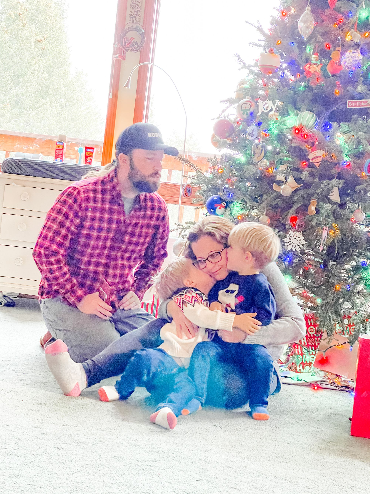
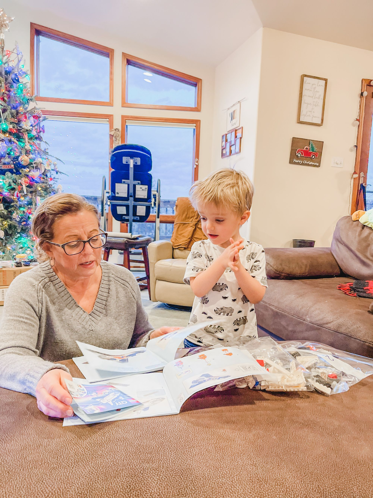
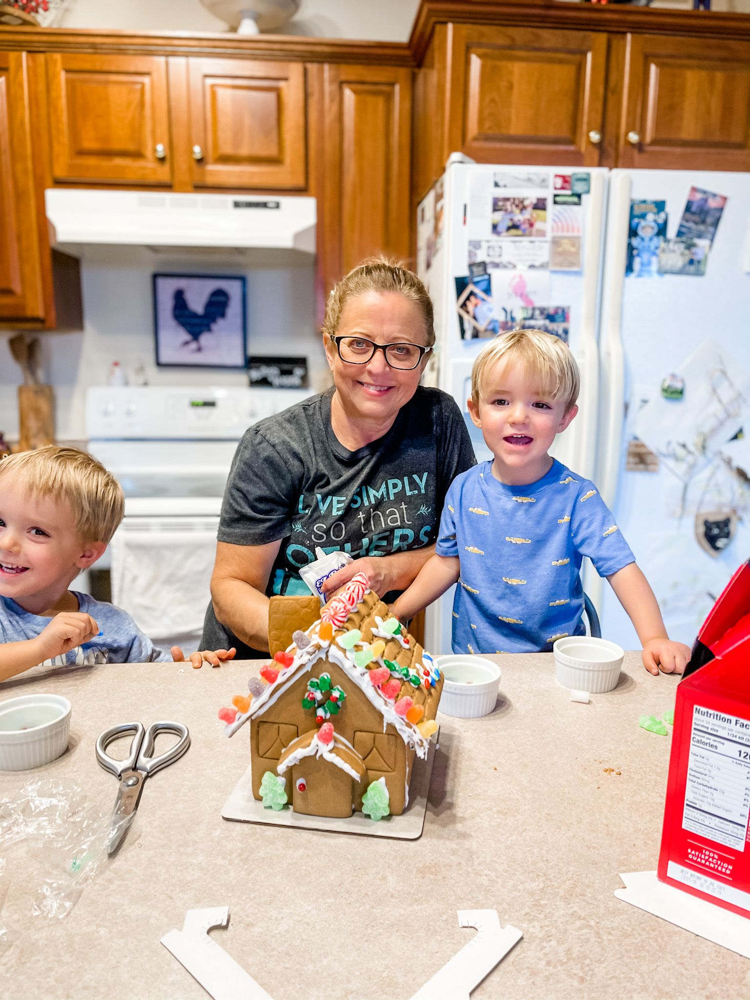

Your mother-in-law is staying with you after baby is born? Are you sure?
Several well-meaning individuals asked me this before our first was born.
Traditionally in the United States, it is recommended you protect those first few weeks, having additional people stay in your home is not recommended.
Thankfully, I didn't listen. After our first was born, having her helpful presence to hold our baby at 4am, the one who would not sleep by himself, was exactly what was needed.
When our second was due to arrive, she once again offered to stay with us. This time there was no hesitation.
YES!
I'm glad she did.
I had postpartum complications, forcing me into bed the first few weeks.
My mom also staying with us, they setup a kiddie pool in our backyard,
Sitting Pool-Side!
They'd call it, holding the baby, watching my eldest splash in the water.
After a LONG pregnancy suffering from Hyperemesis/Gestational Diabetes, I knew her peaceful demeanor was what we needed once again.
This time it wasn't just helpful, it was required.
With two toddlers, 3 and 2, along with a massive postpartum hemorrhage that would leave me weak, we needed her more than ever.
Ensuring I was eating, drinking enough water, she did our laundry, baked endless goodies, and played hours worth of Legos with the boys.
I've been told many cultures require new moms to remain in bed; resting, relaxing, recuperating from pregnancy and birth. Most times, family staying with them, holding the baby, treating the mom like a queen.
Coming from a culture where we often are encouraged to get back to 'normal life' immediately, this was hard for me to understand. After a long journey to motherhood, I've come to realize that accepting help, accepting love, is often exactly what is needed.


